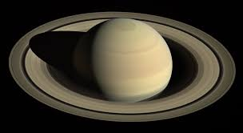

На нашем вы узнайте по 5 фактов 8 планет солнечной системы
- 5 фактов о Меркурий
- 5 фактов о Венере
- 5 фактов о Земле
- 5 Фактов о Марсе
- 5 фактов о Юпитере
- 5 фактв о сатурне
- 5 фактов о Уране
- 5 фактов о Нептуне
Меркурий

Мерку́рий — ближайшая к Солнцу планета Солнечной системы, наименьшая из планет земной группы.
Названа в честь древнеримского бога торговли — быстрого Меркурия, поскольку она движется по небу быстрее других планет.
Её период обращения вокруг Солнца составляет всего 87,97 дней — самый короткий среди всех планет Солнечной системы.>
- Меркурий — самая маленькая и самая близкая к Солнцу планета.
- Несмотря на скромные размеры (около 5 тысяч километров в диаметре) Меркурий отличается высокой плотностью. Плотнее его в Солнечной системе только Земля.
- Несмотря на близость к Солнцу, Меркурий — менее горячая планета, чем Венера.
- В то время как на дневной стороне Меркурия температура превышает четыреста градусов, на ночной стороне она может быть ниже сотни градусов ниже нуля.
- Запущенный в 2004 году зонд «Мессенджер» проработал на меркурианской орбите до 2015 года.
Венера
Вене́ра — вторая по удалённости от Солнца планета Солнечной системы, наряду с Меркурием, Землёй и Марсом принадлежащая к семейству планет земной группы.
Названа в честь древнеримской богини любви Венеры.
По ряду характеристик — например, по массе и размерам — Венера считается «сестрой» Земли[8]. Венерианский год составляет 224,7 земных суток. Она имеет самый длинный период
вращения вокруг своей оси (около 243 земных суток, в среднем 243,0212) среди всех планет Солнечной системы и вращается в направлении, противоположном направлению вращения большинства
планет.
- Венера — самая схожая с Землёй по размерам планета, её диаметр меньше земного всего на 640 километров.
- Венерианский год длится 225 земных дней.
- Во всей Солнечной системе только Венера и Уран вращаются вокруг своей оси с востока на запад.
- День на Венере длиннее, чем год — 243 земных дня.
- Венеру можно легко увидеть с Земли невооружённым взглядом.
Земля

Земля́ — третья по удалённости от Солнца планета Солнечной системы. Самая плотная, пятая по диаметру и массе среди всех планет и крупнейшая среди планет земной группы, в которую
входят также Меркурий, Венера и Марс.
Единственное известное человеку в настоящее время тело Солнечной системы в частности и Вселенной вообще, населённое живыми организмами.
- Плотность Земли выше любой другой планеты (5,515 г/см3).
- Разница диаметра Земли у полюсов и вокруг экватора составляет 43 километра.
- Средняя глубина океанов, покрывающих 70% поверхности планеты, равняется четырем километрам.
- Образование континентов произошло в результате постоянного движения земной коры. Первоначально на Земле существовал один континент, известный как Пангея.
- Смена 4 сезонов года осуществляется за счет экваториального наклона Земли к своей орбите, составляющего 23,44 градуса.
Марс
Марс — четвёртая по удалённости от Солнца и седьмая по размерам планета Солнечной системы; масса планеты составляет 10,7 % массы Земли.
- Марс — наиболее похожая на Землю планета в Солнечной системе.
- Тонкая атмосфера Марса состоит в основном из углекислого газа.
- Марсианская гора Олимп — самая высокая гора в Солнечной системе, её высота составляет 27,4 километра.
- Каньон «Долина Маринера» на Марсе намного глубже и длиннее Великого Каньона на Земле.
- Плотность марсианской атмосферы составляет примерно один процент от земной.
Юпитер

Юпи́тер — крупнейшая планета Солнечной системы, пятая по удалённости от Солнца. Наряду с Сатурном, Ураном и Нептуном, Юпитер классифицируется как газовый гигант.
- Газовый гигант Юпитер — самая крупная планета в Солнечной системе.
- Если бы Юпитер был чуть больше и массивнее, он вполне мог бы стать звездой класса «коричневый карлик».
- Юпитер за счёт своей мощной гравитации выполняет роль своеобразного щита, частично защищая землю от комет так как он притягивает их к себе.
- Юпитера в 1300 раз больше объёма Земли, а гравитация больше земной в два с половиной раза.
- Масса Юпитера в два с половиной раза больше всех остальных планет нашей системы, вместе взятых.
Сатурн
Сату́рн — шестая планета от Солнца и вторая по размерам планета в Солнечной системе после Юпитера.
Сатурн, а также Юпитер, Уран и Нептун, классифицируются как планеты-гиганты. Сатурн назван в честь римского бога земледелия. Символ Сатурна — серп.
- На Сатурне есть ярко выраженная смена времён года. Один сезон длится более семи земных лет.
- Сатурн — планета с наименьшей среди планет Солнечной системы плотностью, в два раза ниже плотности воды.
- Вокруг него обращаются 53 спутника, и, вероятно, их на самом деле больше, просто не все ещё обнаружены.
- Знаменитые кольца Сатурна были открыты астрономами в 1610 году.
- Сатурн имеет не совсем шарообразную форму. Скорость его вращения так велика, что он сплющивает сам себя.
Уран

Ура́н — планета Солнечной системы, седьмая по удалённости от Солнца, третья по диаметру и четвёртая по массе.
Была открыта в 1781 году английским астрономом Уильямом Гершелем и названа в честь греческого бога неба Урана.
- День на Уране длится 17 земных часов, а год — 84 земных года.
- У Урана 27 спутников.
- Уран состоит из жидкостей, а в центре планеты находится твёрдое ядро. ...
- Атмосфера Урана состоит в основном из водорода и гелия, с несколькими процентами метана.
- У Урана есть кольца, но не такие заметные и ярко выраженные, как у Сатурна
Нептун

Непту́н — восьмая и самая дальняя от Земли планета Солнечной системы.
По диаметру находится на четвёртом месте, а по массе — на третьем.
Масса Нептуна в 17,2 раза, а диаметр экватора в 3,9 раза больше земных. Планета была названа в честь римского бога морей.
- Нептун является самой далекой планетой.
- Нептун самый маленький из газовых гигантов.
- Его поверхностная гравитация почти равна Земной.
- Вокруг его открытия, до сих пор не утихают споры
- На планете самые сильные ветры в Солнечной системе.